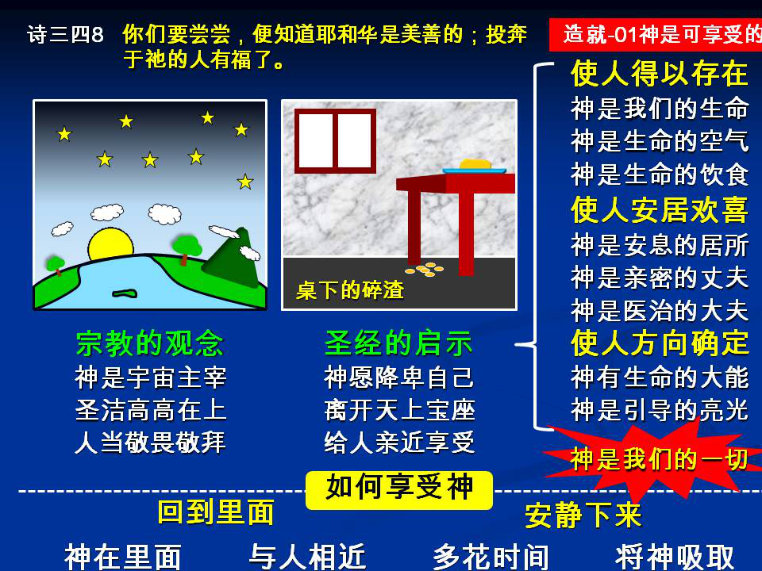

诗歌：补充210
重要经文：
诗篇四十二篇一至二节：‘神阿，我的心切慕你，如鹿切慕溪水。我的心渴想神，就是活神（原文）；我几时得朝见神呢？’
三十四篇八节：‘你们要尝尝，便知道主是美善。’（原文。）
三十六篇七至九节：‘神阿，你的慈爱，何其宝贵；世人投靠在你翅膀的荫下。他们必因你殿里的肥甘，得以饱足；你也必叫他们喝你乐河的水。因为在你那里，有生命的源头；在你的光中，我们必得见光。’
纲 目 要 点：
壹 神是可享受的——诗四十二1~2、三十四8、三十六7~9
一 神是我们的生命——西三4、约十10、十一25
二 神是我们的丈夫——林后十一2
三 神是我们的饮食——约六35、57
四 神是我们的居所——启二十一3、22
五 神是我们生命的光.
六 神是我们的能力。
七 神是我们的爱、喜乐和安慰。
八 神是我们的医治——出十五26。
九 神是我们的引导。
十 神要作我们的一切。
贰 神降卑自己为给我们享受。
叁 怎样享受神：
一 回到里面。
二 安静下来。
信息选读：神是可享受的
诗篇三十四篇说，我们可以尝尝神，就知道祂是怎样的美善。主耶稣也曾清楚告诉我们，祂是我们的食物，祂是我们生命的粮食。祂既是我们的食物，既是我们的粮食，就是我们可以享受的。
神是我们的生命
在创世记一开头，说到神把人一造好了之后，就把人摆在生命树的跟前；神要人接触生命树，就是要人接触祂自己。神自己要进到人的里头来作人的生命。生命对于人是何等的亲密，也是何等的紧要。几几乎乎可以说，生命就是人自己。人若没有生命，人之为人是不可能的。
神是我们的丈夫
圣经还说神像一个丈夫。我们这些受造蒙救赎的人好像一个妻子。神之于我们不光是一个生命之于人，并且还是一个丈夫之于妻子。一个妻子的一切都在于她的丈夫。供应在丈夫，保护在丈夫，欢乐在丈夫，安慰在丈夫，满足也在丈夫。
神是我们的饮食
我们都知道，人生存需要饮食，需要吃，需要喝。我们没有一天可以脱开饮食。我们若不吃不喝，就不能活了。照样，在圣经里神给我们看见，祂就是我们的食物，祂就是我们的活水，祂就是来作我们的食粮。
神是我们的居所
每个人都需要有一所房子。没有房子，就没有住处，就没有安息之所，就没有落脚之地，也没有作事的地方。我们要作事，要休息，要得着安息，就绝对需要一个居所。亲爱的弟兄姊妹，神不仅是我们里头的食粮，是我们里面的饮料，神还是我们的一个居所。我们能住在祂里面，像祂能住在我们里面一样。我们能在祂里面得着永远的安息。
神是我们生命的光
黑暗乃是一种惩罚。人需要光。人生存，人行动，人作事，都需要光。圣经告诉我们，神就是我们的光，跟从祂的就不在黑暗里走，必要得着生命的光。没有祂，离开祂，和祂隔绝了，我们就必在黑暗里。所以祂给我们享受是多方多面的。祂不光是作我们的生命，不光是作我们的食粮，不光是作我们的房屋，作我们的丈夫，也作我们的亮光。祂就是我们的光。祂要我们在祂的光中行动。
神是我们的能力
一个人活着单有生命是不够的，还要生命里头带着能力才可以。有的人虽然有生命，但他是软弱无力的，不能活动的。什么缘故呢？就是因为他缺少一个力量。所以我们还需要神作我们的能力，作我们的力量。
神是我们的爱、喜乐和安慰
人活着需要爱，人活着需要喜乐，人活着需要安慰。感谢神，圣经也清楚告诉我们，神就是我们所需要的爱，神就是我们的喜乐，神就是我们的安慰。你需要什么，神就是你的什么。
神是我们的医治
你的心灵有病，你的身体有病，你的心理方面有病，最好的医治乃是神自己。祂是耶和华拉法，（出十五26，原文，）意思就是说，耶和华是医治你的一位。祂是耶和华医治你的神，你有了祂，就有医治。
神是我们的引导
还不仅如此，你这个人的生活行动还需要引导。你需要知道怎样行、止、进、退，或向左，或向右。感谢神，祂也是我们的引导。我们摸着了祂，就有了引导，有了方向，有了道路。
神要作我们的一切
圣经告诉我们说，神自己要作我们的一切。祂要作我们的生命，祂要作我们的丈夫，祂要作我们的饮食，祂要作我们的居所，祂要作我们的亮光，祂要作我们的能力，祂要作我们的安慰，祂要作我们的喜乐，祂要作我们的爱，祂要作我们的医治，祂要作我们的引导。我们需要什么，祂就是什么，祂就作我们的什么。
神降卑自己为给我们享受
祂这一位伟大的、圣洁的、光明的主宰，乃是愿意把祂自己降卑，来就你这一个低下的、微小的，也是肮脏污秽的人。那一天，祂在叙加井旁怎样和一位不名誉的撒玛利亚妇人有接触，今天祂也喜欢和我们这些不名誉的罪人接触。祂愿意把祂自己分给我们。祂不仅在十字架上作了我们的救赎主，祂也不仅高高在宝座上作了我们万有的主，祂更是把祂自己缩小了，降低了，到一个地步，和你我一样的小，一样的低，好叫我们能得着祂。
怎样享受神
回到里面
这一位神，就在你的里面。你若要享受祂，你就得学习把你整个的人掉回头，到你的里面去。哦，今天这位神是在你的里面，祂就住在你的心灵里面。你不必到外面去找祂。祂离你太近了。
安静下来
你要享受祂，你就要学习花一点时间，安静在祂面前，向祂祷告；平常的说法，就是和祂有交通。最上的祷告，就是吸取神的祷告。祷告不在于你说了多少的话语，乃在于你能找一点的时间，安静下来，把你忙碌的心收回来，在你的里面定下来，和神有一点交通，吸取神自己。到那一个时候，你就知道祂是你的生命，祂是你的食粮，是你的力量，是你的亮光、喜乐、安慰。
1 为什么说神是可享受的？
2 神是怎样将祂自己给我们享受的？
3 我们怎样才能享受神？
